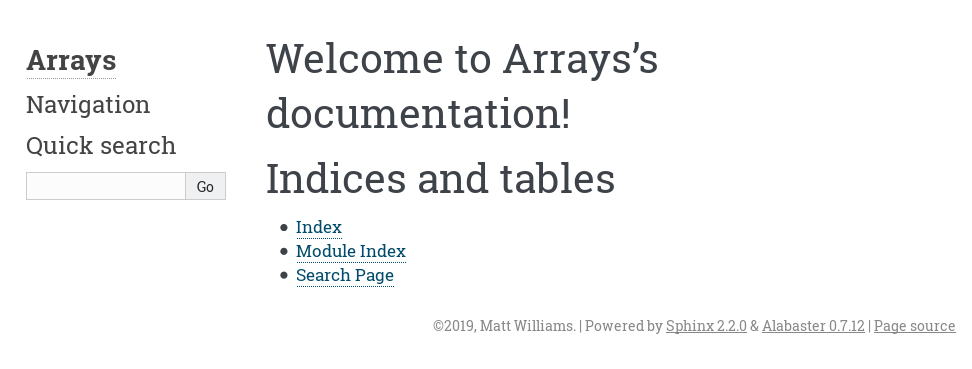

Best practices in software engineering
Appendix: Generating documentation web pages¶
Providing documentation for your functions inside the Python Console is a useful thing to do but it's expected of most publicly published projects to also have a web-browsable version as well. There is a tool for Python called Sphinx which does exactly that.
Make sure Sphinx is installed. Test in the Terminal that sphinx-build exists by running it and checking that it returns the message:
usage: sphinx-build [OPTIONS] SOURCEDIR OUTPUTDIR [FILENAMES...]
sphinx-build: error: the following arguments are required: sourcedir, outputdir, filenamesIf it is not installed then either:
- install it into the base environment through Anaconda Navigator
- or create a new environment, install both
jupyterlabandsphinxand then restart JupyterLab in that environment.
Open up the terminal and make sure that you are in the correct directory. You can check this by running ls if you are on Linux or MacOS or dir if you are running Windows. You should see arrays.py listed in the output.
We are now going to create a set of Sphinx configuration files. Sphinx provides a tool called sphinx-quickstart for this purpose which will ask you a few questions and create all the files it needs. In the Terminal, type:
sphinx-quickstart
and answer the questions it asks in the following way:
ntoSeparate source and build directories- Set the project name to
Arrays - Enter your name as the
Author name - Just press enter for
Project release - Just press enter for
Project language
After that it should return you to the Terminal prompt.
Now that we have the configuration for Sphinx set up, run make html which will go ahead and generate the documentation and create some HTML files on your computer. To find out where they went, run the following in the Python Console:
import os
print(f"file://{os.getcwd()}/_build/html/index.html")
That will print out something like file:///home/matt/bestpractices/_build/html/index.html. Copy and paste that into the URL bar in your web browser and it should bring up the documentation. It should look like:

Adding our documentation to Sphinx¶
In order for our function and module documentation to show up in the HTML pages we need to make a few tweaks to the Sphinx configuration.
First we need to enable the autodoc extension so that Sphinx can create documentation pages from Python source code and the napoleon extension so that it understands the Google-style docstrings. Open conf.py (it's a normal Python file) and find the extensions variable. It will be defined to be an empty list. Edit it so that it reads:
extensions = [
'sphinx.ext.autodoc',
'sphinx.ext.napoleon',
]
The other change we need to make in conf.py is is to allow Sphinx to import our arrays module. To allow this it needs to have the current directory in its search path. Find on lines 13, 14, and 15 the lines that read:
# import os
# import sys
# sys.path.insert(0, os.path.abspath('.'))
and uncomment them so that they look like:
import os
import sys
sys.path.insert(0, os.path.abspath('.'))
This is all the configuration changes we need to make. We're now ready to tell Sphinx about our module. To do this we will put some special code in a file called arrays.rst whcih Sphinx will interpret to find our source code and documentation.
Create a new files called arrays.rst and put the following:
arrays module
=============
.. automodule:: arrays
:members:
:undoc-members:
:show-inheritance:
Then edit the toctree directive in index.rst to look like:
.. toctree::
:maxdepth: 2
:caption: Contents:
arrays
being careful to check that the indentation is correct and lines up.
Run make html once more and refresh the documentation HTML page. On the main page, click "arrays module". This will take you to the page with the documentation. It should look like:

You'll see here that the module docstring is shown at the top, followed by the documentation for the function. It's formatted the parameters and return types nicely and has even highlighted the example as Python code.
Exercise¶
- Try changing the theme to one from https://www.sphinx-doc.org/en/master/usage/theming.html#builtin-themes
Sphinx is by far the most commonly used documentation tool for Python projects. It's even used by the official Python documentation. If you have your Python project hosted at a publicly visible Git hosting site like GitHub, GitLab or Bitbucket, there is a free service called Read The Docs which can build and host your pages for you.
When using Git or any other version control software, you should make sure you check in your documentation sources alongside your code. For Sphinx, make sure you add conf.py, any rst files you create manually and the "make" files. Do not commit to Git any HTML output from running Sphinx.